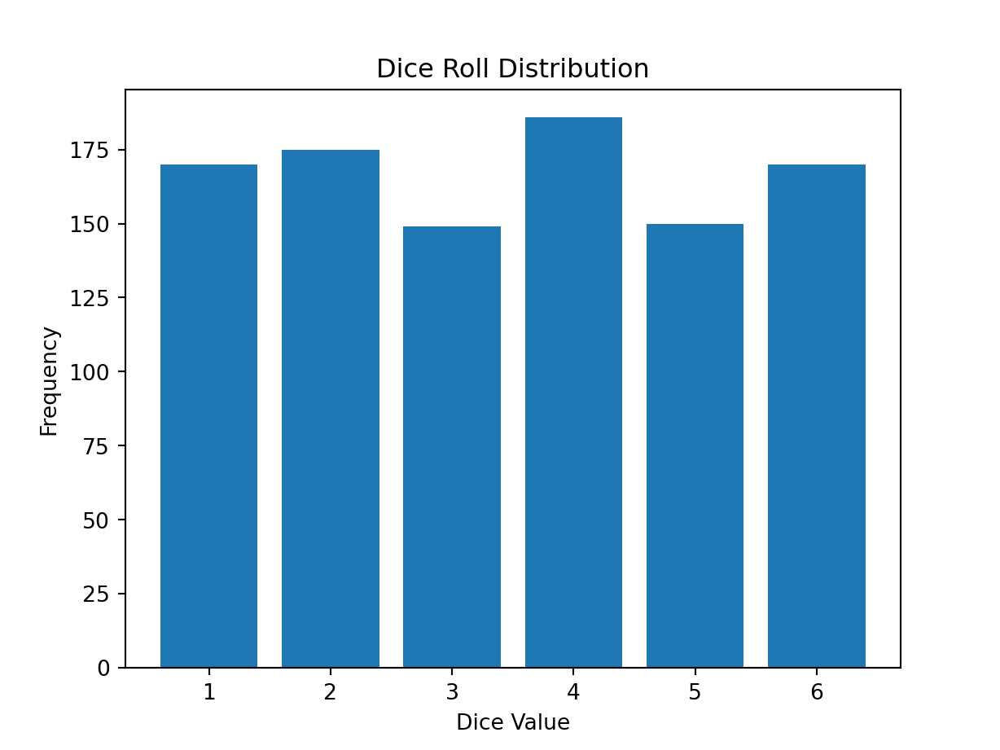
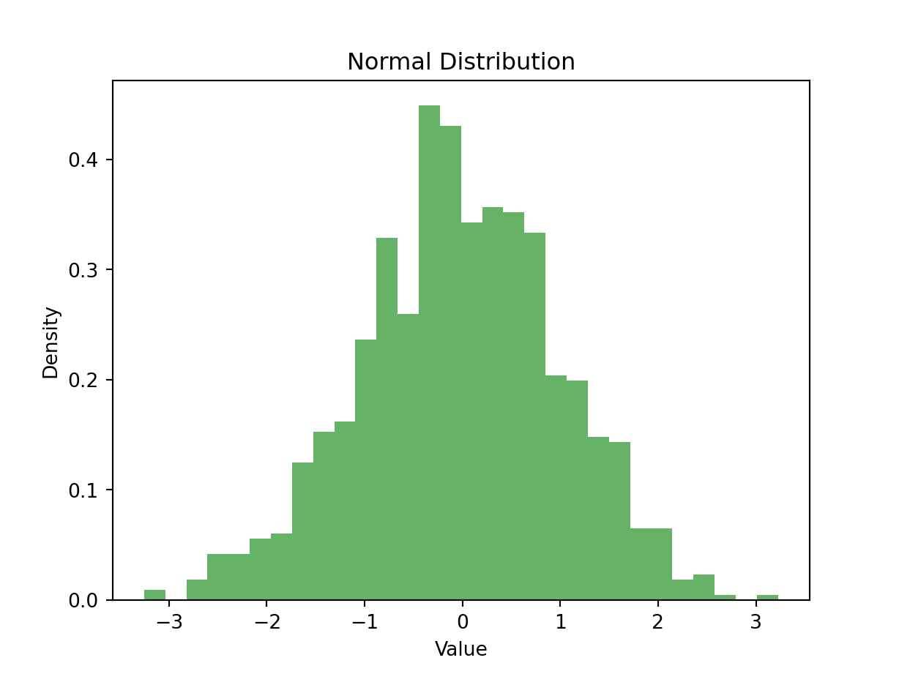
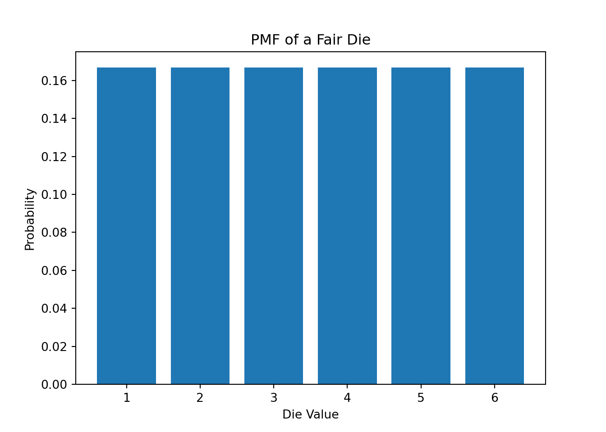
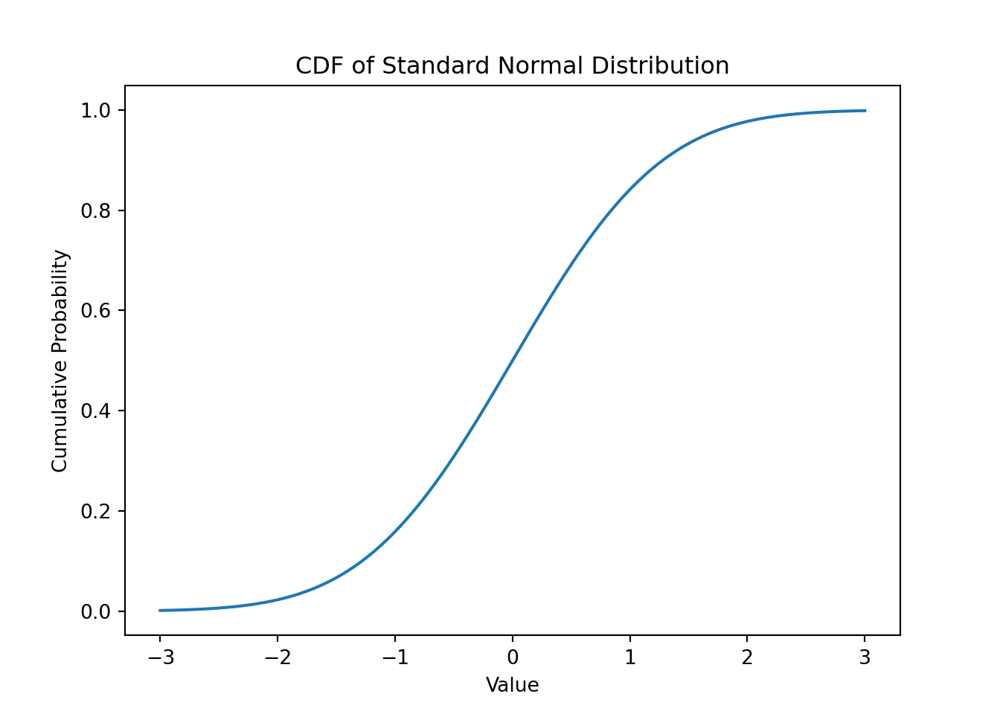
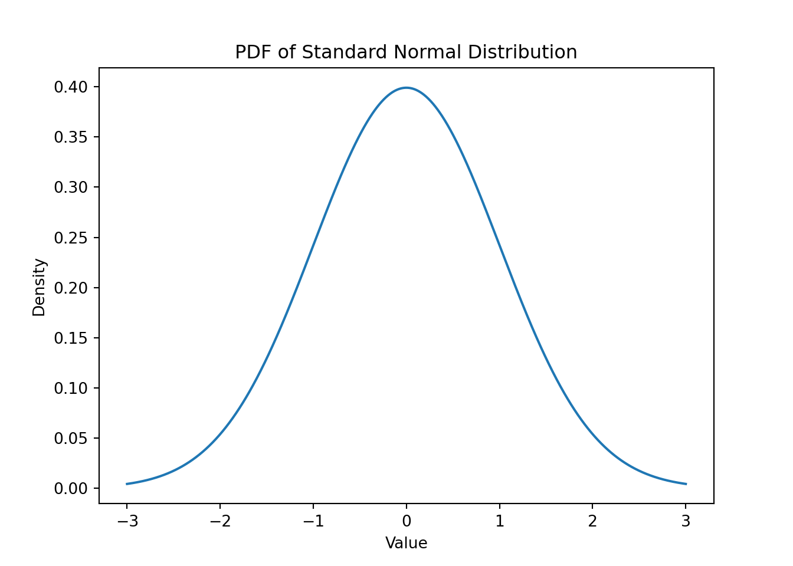

Random variables and probability distribution are fundamental concepts in statistics, forming the backbone of data analysis and probabilistic modeling. In this blog, we explore these concepts including the basics, some examples, and visualization of the outputs.
Random Variable
A random variable is a variable whose possible values are numerical outcomes of a random phenomenon. In machine learning, they are key to modeling uncertainties and probabilities.
Simulating Random Variables in Python
Python, with libraries like numpy and matplotlib, is a powerful tool for statistical simulations. Let’s demonstrate this with some examples.
Discrete Random Variables
First, we’ll simulate a discrete random variable: the outcome of a dice roll.
import numpy as npimport matplotlib.pyplot as plt# Setting a seed for reproducibilitynp.random.seed(123)# Simulating dice rollsdice_rolls = np.random.choice([1, 2, 3, 4, 5, 6], size=1000)# Plotting the resultsplt.hist(dice_rolls, bins=np.arange(1, 8) -0.5, rwidth=0.8)plt.title('Dice Roll Distribution')plt.xlabel('Dice Value')plt.ylabel('Frequency')plt.xticks(range(1, 7))
([<matplotlib.axis.XTick object at 0x130a9ebd0>, <matplotlib.axis.XTick object at 0x130871f10>, <matplotlib.axis.XTick object at 0x130aae250>, <matplotlib.axis.XTick object at 0x130a65850>, <matplotlib.axis.XTick object at 0x130af8d50>, <matplotlib.axis.XTick object at 0x130afaf50>], [Text(1, 0, '1'), Text(2, 0, '2'), Text(3, 0, '3'), Text(4, 0, '4'), Text(5, 0, '5'), Text(6, 0, '6')])
plt.show()

# Simulating a normal distribution for continuous random variablenormal_data = np.random.normal(loc=0, scale=1, size=1000)# Plotting the resultsplt.hist(normal_data, bins=30, density=True, alpha=0.6, color='g')plt.title('Normal Distribution')plt.xlabel('Value')plt.ylabel('Density')plt.show()

Probability Distribution
A probability function assigns probabilities to each possible outcome of a random experiment. The function must satisfy three conditions: non-negativity, normalization, and countable additivity.
Mathematically, a probability function ( P ) for a random variable ( X ) is defined as:
\[ P(X = x) \geq 0 \]
\[ \sum P(X = x_i) = 1 \]
Where \(x_i\) are the possible outcomes of ( X ).
Probability distributions describe the likelihood of each possible value of a random variable. There are two main types of probability distributions: discrete and continuous.
Probabiliyt Mass Function (PMF)
The PMF is a function that describes the probabilities of different outcomes of a discrete random variable. The PMF assigns a value to each possible outcome, which represents the probability that the outcome will occur. The PMF is defined as the probability of a random variable taking on a particular value. The sum of all the PMF values is equal to 1, as the probability of the outcome must be 100%.
Example: PMF of a Fair Die Roll
import numpy as npimport matplotlib.pyplot as plt# PMF of a fair dievalues = np.arange(1, 7)probabilities = np.full(6, 1/6)plt.bar(values, probabilities)plt.title('PMF of a Fair Die')plt.xlabel('Die Value')plt.ylabel('Probability')plt.show()

Cumulative Density Function (CDF)
The Cumulative Distribution Function (CDF) is a fundamental concept in probability theory that applies to both discrete and continuous random variables. It represents the probability that a random variable (X) will take on a value less than or equal to a specific value (x). \[F_X(x)=P(X\leq x)\] ### Example: CDF of a Normal Distribution
# CDF of a standard normal distributionimport numpy as npimport matplotlib.pyplot as pltfrom scipy.stats import normx = np.linspace(-3, 3, 1000)y = norm.pdf(x, 0, 1)y_cdf = norm.cdf(x, 0, 1)plt.plot(x, y_cdf)plt.title('CDF of Standard Normal Distribution')plt.xlabel('Value')plt.ylabel('Cumulative Probability')plt.show()

Probability Density Function (PDF)
Unlike the PMF, which is used for discrete random variables, the Probability Density Function (PDF) is associated with continuous random variables. The PDF describes the relative likelihood of a continuous random variable to take on a specific value.
Understanding the PDF
The key distinction to understand is that, for continuous random variables, the probability of taking on any single, exact value is effectively zero, as there are infinitely many possible values. Therefore, the PDF does not directly give us a probability for a single value. Instead, it helps us understand the distribution of probabilities across a range of values.
Example: PDF of a Normal Distribution
import numpy as npimport matplotlib.pyplot as pltfrom scipy.stats import norm# PDF of a standard normal distributionx = np.linspace(-3, 3, 1000)y = norm.pdf(x, 0, 1)plt.plot(x, y)plt.title('PDF of Standard Normal Distribution')plt.xlabel('Value')plt.ylabel('Density')plt.show()

Conclusion
Understanding the concepts of random variables and probability function are essential in the field of machine learning and data science. The PMF, PDF, CDF functions provide fundamental insights into the behavior of random variables.
Source Code
---title: "Random Variables and Probability Distribution"author: "Mohaimin"date: "2023-12-01"categories: [probability]---# Random Variables and Probability Distribution## IntroductionRandom variables and probability distribution are fundamental concepts in statistics, forming the backbone of data analysis and probabilistic modeling. In this blog, we explore these concepts including the basics, some examples, and visualization of the outputs.## Random VariableA random variable is a variable whose possible values are numerical outcomes of a random phenomenon. In machine learning, they are key to modeling uncertainties and probabilities.### Simulating Random Variables in PythonPython, with libraries like `numpy` and `matplotlib`, is a powerful tool for statistical simulations. Let's demonstrate this with some examples.### Discrete Random VariablesFirst, we'll simulate a discrete random variable: the outcome of a dice roll.<!--```{r}library(reticulate)use_python("/Users/bota/Files/VT/Course Materials/Fall 23/ML Blog/vscode/mlblog/bin/python")```-->```{python}import numpy as npimport matplotlib.pyplot as plt# Setting a seed for reproducibilitynp.random.seed(123)# Simulating dice rollsdice_rolls = np.random.choice([1, 2, 3, 4, 5, 6], size=1000)# Plotting the resultsplt.hist(dice_rolls, bins=np.arange(1, 8) -0.5, rwidth=0.8)plt.title('Dice Roll Distribution')plt.xlabel('Dice Value')plt.ylabel('Frequency')plt.xticks(range(1, 7))plt.show()# Simulating a normal distribution for continuous random variablenormal_data = np.random.normal(loc=0, scale=1, size=1000)# Plotting the resultsplt.hist(normal_data, bins=30, density=True, alpha=0.6, color='g')plt.title('Normal Distribution')plt.xlabel('Value')plt.ylabel('Density')plt.show()```## Probability DistributionA probability function assigns probabilities to each possible outcome of a random experiment. The function must satisfy three conditions: non-negativity, normalization, and countable additivity.Mathematically, a probability function \( P \) for a random variable \( X \) is defined as:$$ P(X = x) \geq 0 $$$$ \sum P(X = x_i) = 1 $$Where $x_i$ are the possible outcomes of \( X \).Probability distributions describe the likelihood of each possible value of a random variable. There are two main types of probability distributions: discrete and continuous.## Probability Mass Function (PMF)The PMF is a function that describes the probabilities of different outcomes of a discrete random variable. The PMF assigns a value to each possible outcome, which represents the probability that the outcome will occur. The PMF is defined as the probability of a random variable taking on a particular value. The sum of all the PMF values is equal to 1, as the probability of the outcome must be 100%.### Example: PMF of a Fair Die Roll```{python}import numpy as npimport matplotlib.pyplot as plt# PMF of a fair dievalues = np.arange(1, 7)probabilities = np.full(6, 1/6)plt.bar(values, probabilities)plt.title('PMF of a Fair Die')plt.xlabel('Die Value')plt.ylabel('Probability')plt.show()```## Cumulative Density Function (CDF)The Cumulative Distribution Function (CDF) is a fundamental concept in probability theory that applies to both discrete and continuous random variables. It represents the probability that a random variable \(X\) will take on a value less than or equal to a specific value \(x\).$$F_X(x)=P(X\leq x)$$### Example: CDF of a Normal Distribution```{python}# CDF of a standard normal distributionimport numpy as npimport matplotlib.pyplot as pltfrom scipy.stats import normx = np.linspace(-3, 3, 1000)y = norm.pdf(x, 0, 1)y_cdf = norm.cdf(x, 0, 1)plt.plot(x, y_cdf)plt.title('CDF of Standard Normal Distribution')plt.xlabel('Value')plt.ylabel('Cumulative Probability')plt.show()```## Probability Density Function (PDF)Unlike the PMF, which is used for discrete random variables, the Probability Density Function (PDF) is associated with continuous random variables. The PDF describes the relative likelihood of a continuous random variable to take on a specific value. ### Understanding the PDFThe key distinction to understand is that, for continuous random variables, the probability of taking on any single, exact value is effectively zero, as there are infinitely many possible values. Therefore, the PDF does not directly give us a probability for a single value. Instead, it helps us understand the distribution of probabilities across a range of values. ### Example: PDF of a Normal Distribution```{python}import numpy as npimport matplotlib.pyplot as pltfrom scipy.stats import norm# PDF of a standard normal distributionx = np.linspace(-3, 3, 1000)y = norm.pdf(x, 0, 1)plt.plot(x, y)plt.title('PDF of Standard Normal Distribution')plt.xlabel('Value')plt.ylabel('Density')plt.show()```## ConclusionUnderstanding the concepts of random variables and probability function are essential in the field of machine learning and data science. The PMF, PDF, CDF functions provide fundamental insights into the behavior of random variables.